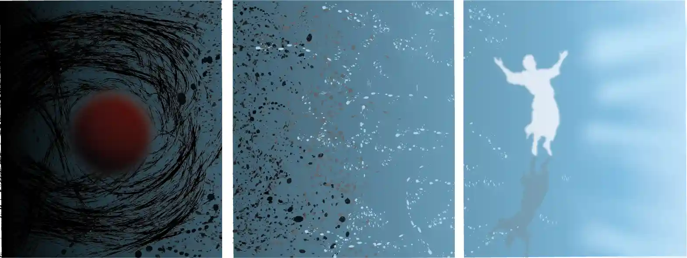

Découvrez mes créations personnelles
À travers cette série de photographies, j’ai choisi de capturer le ciel sous toutes ses formes : de l'éclat d'un lever de soleil aux nuances changeantes des nuages. L’intention était de révéler la beauté naturelle et éphémère de ce qui nous surplombe, tout en cherchant à susciter une palette d'émotions chez le spectateur.

Ce projet constitue la première ébauche d’un triptyque pictural en préparation, intitulé Espoir. En m’appuyant sur les outils d'illustration vectorielle d'Adobe Illustrator, j’ai conçu cet aperçu numérique en cherchant à retranscrire la progression des émotions que je souhaite transmettre, évoluant de la mélancolie vers la paix.